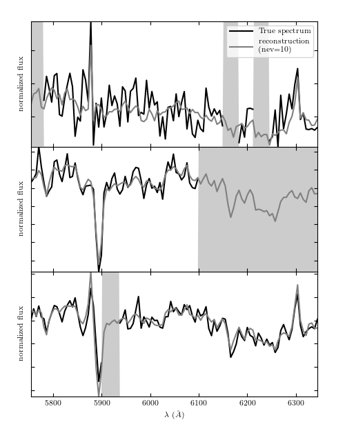

SDSS Reconstruction from Eigenspectra¶
This example shows the input galaxy spectra, which have missing masked regions, and the reconstruction & interpolation using PCA

# Author: Jake VanderPlas <vanderplas@astro.washington.edu>
# License: BSD
# The figure produced by this code is published in the textbook
# "Statistics, Data Mining, and Machine Learning in Astronomy" (2013)
# For more information, see http://astroML.github.com
import numpy as np
from matplotlib import pyplot as plt
from matplotlib import ticker
from astroML.datasets import fetch_sdss_corrected_spectra
from astroML.datasets import sdss_corrected_spectra
#------------------------------------------------------------
# Get spectra and eigenvectors used to reconstruct them
data = fetch_sdss_corrected_spectra()
spec = sdss_corrected_spectra.reconstruct_spectra(data)
lam = sdss_corrected_spectra.compute_wavelengths(data)
evecs = data['evecs']
mu = data['mu']
norms = data['norms']
mask = data['mask']
#------------------------------------------------------------
# plot the results
i_plot = ((lam > 5750) & (lam < 6350))
lam = lam[i_plot]
specnums = [20, 8, 9]
subplots = [311, 312, 313]
fig = plt.figure(figsize=(8, 10))
fig.subplots_adjust(hspace=0)
for subplot, i in zip(subplots, specnums):
ax = fig.add_subplot(subplot)
# compute eigen-coefficients
spec_i_centered = spec[i] / norms[i] - mu
coeffs = np.dot(spec_i_centered, evecs.T)
# blank out masked regions
spec_i = spec[i]
mask_i = mask[i]
spec_i[mask_i] = np.nan
# plot the raw masked spectrum
ax.plot(lam, spec_i[i_plot], '-', color='k', lw=2,
label='True spectrum')
# plot two levels of reconstruction
for nev in [10]:
if nev == 0:
label = 'mean'
else:
label = 'nev=%i' % nev
spec_i_recons = norms[i] * (mu + np.dot(coeffs[:nev], evecs[:nev]))
ax.plot(lam, spec_i_recons[i_plot], label=label)
# plot shaded background in masked region
ylim = ax.get_ylim()
mask_shade = ylim[0] + mask[i][i_plot].astype(float) * ylim[1]
plt.fill(np.concatenate([lam[:1], lam, lam[-1:]]),
np.concatenate([[ylim[0]], mask_shade, [ylim[0]]]),
lw=0, fc='k', alpha=0.2)
ax.set_xlim(lam[0], lam[-1])
ax.set_ylim(ylim)
ax.yaxis.set_major_formatter(ticker.NullFormatter())
if subplot == 311:
ax.legend(loc=1, prop=dict(size=14))
ax.set_xlabel('$\lambda\ (\AA)$')
ax.set_ylabel('normalized flux')
plt.show()